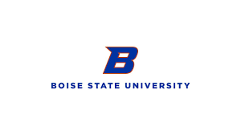

My Portfolio
Projects I've built during school, research, and personal exploration. Click any card for details.

Portfolio Website
This personal portfolio site, built from scratch with HTML, CSS, and JavaScript.

Book Website / Database
A research tool for a psychology professor, featuring a MySQL backend and a React + Node.js frontend.

Taskr — Android App
A TaskRabbit-style Android app connecting task-needers with task-doers, built with Firebase.

REU — Boise State University
Research on adversarial attacks against AI-based malware detectors, presented at ICUR 2024.